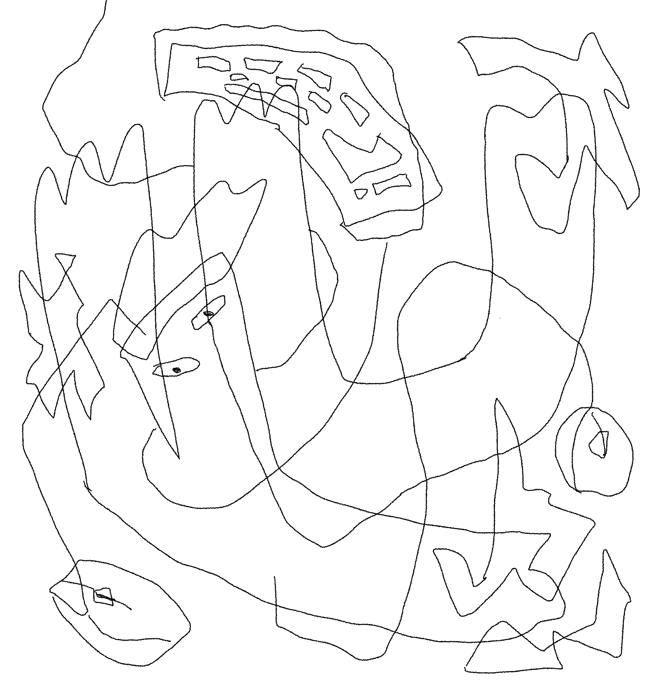
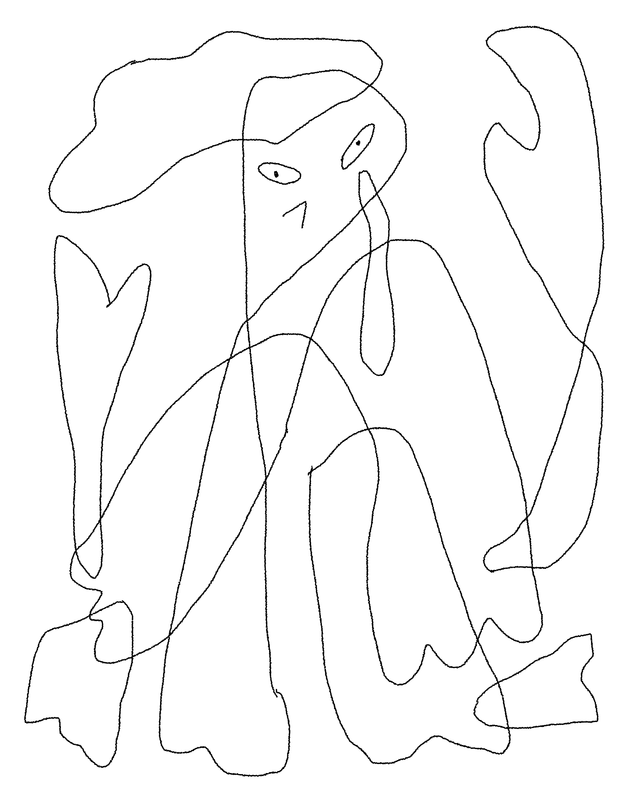
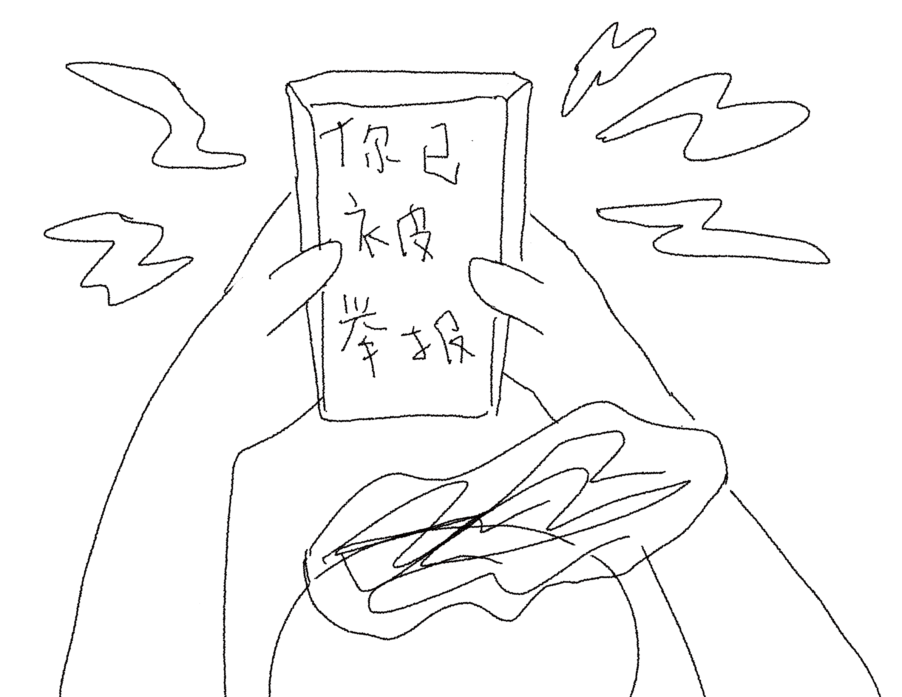
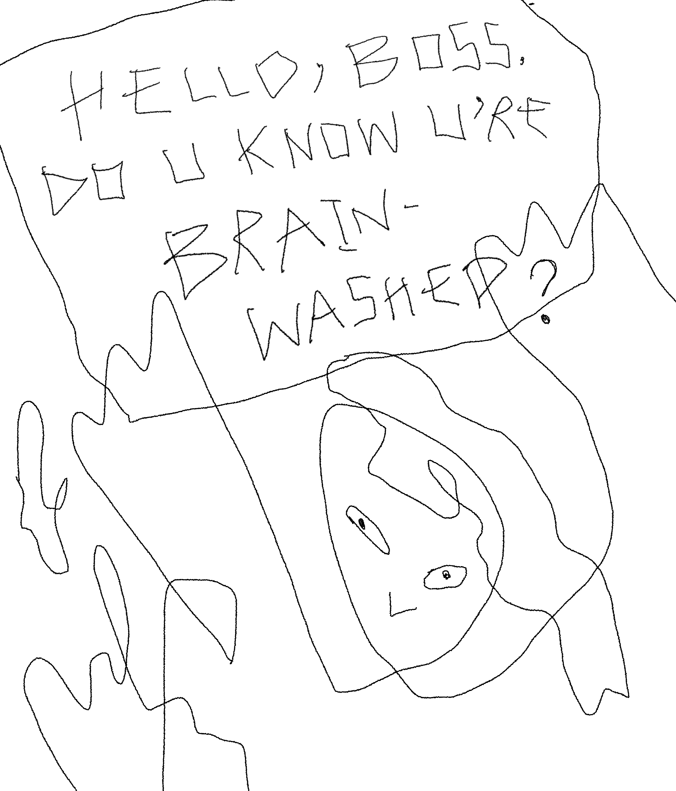
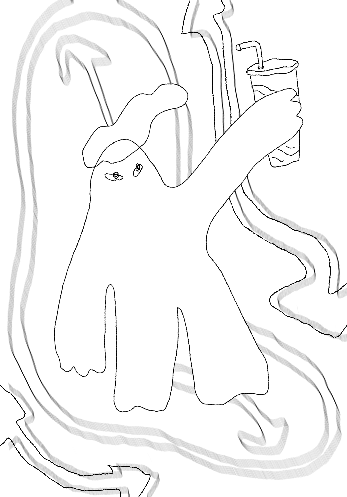
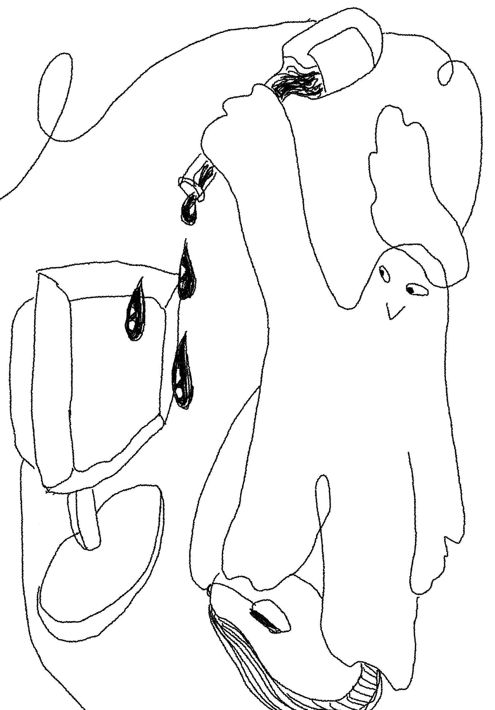

wang yifan is a technology journalist, a new media artist, and a constantly-becoming soft blob that embraces boundary deconstruction, relation-building, DIY spirits and non-institutional ways of existence.
she makes stuff like news, zines, games, tattoos, everyday-everynight revolutions and everything in between
she studied philosophy and studio art at Vassar College.
her practice engages with two main issues:
1. she seeks to unpack, interrogate and demystify contemporary forms of power and control including digital governmentality and financialized neo-feudalism.
2. she looks for tangible, feasible, quotidian ways to hack, sabotage, disrupt these systems of domination, and to open up loopholes, fractures and autonomous zones that allow us to
live as if we are already free.
some self-portraits:





